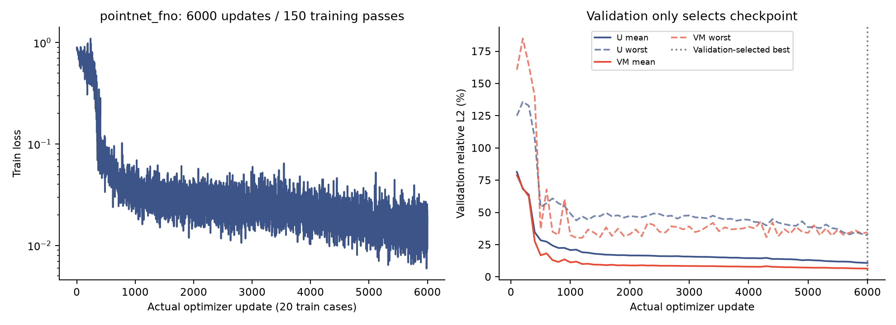
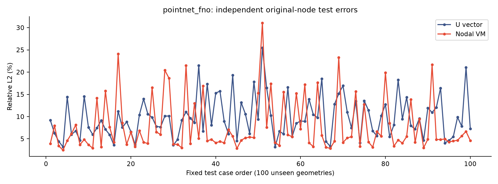
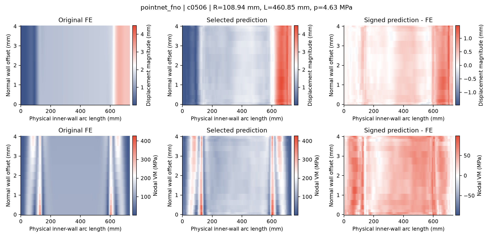
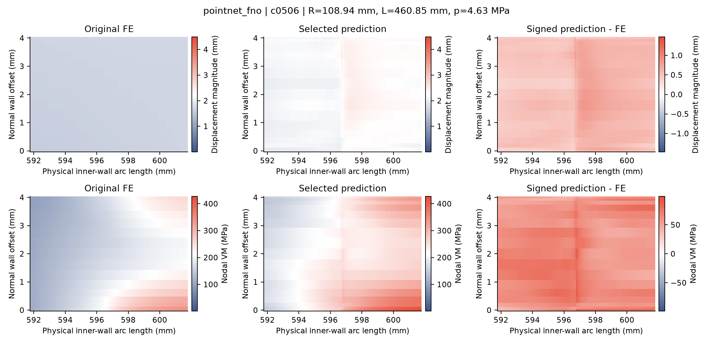

800 train / 100 validation / 100 test. 6000 actual Adam updates (20 equally weighted train cases per update, 150 train passes). Checkpoint 6000 selected only by validation.
| Method | U test mean / worst (%) | VM test mean / worst (%) |
|---|---|---|
| pointnet_fno | 9.7671 / 25.4867 | 7.7926 / 31.0680 |
Negative predicted VM cases: 9; raw predictions preserved. Budget completion is not an accuracy pass. These are research results for the specified geometry family and linear FE model; production eligibility remains false.
All 100 test original fields, targets and predictions independently checked on CPU. Train/validation summaries aggregate saved all-case evaluations. The serial worker's exported target has a normalization round trip; metrics here use original FP64 FE labels.




All 100 test case metrics CSV · Independent CPU verification